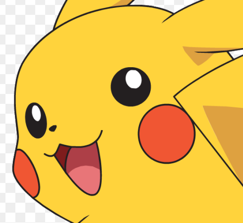
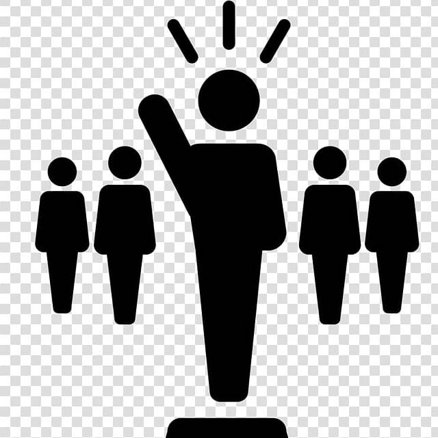

As a fourth-year college student in pursuit of an Information Technology degree, I've developed a deep passion for programming, particularly finding joy in exploring game development using Unity. Alongside this, I've been intrigued by the possibilities of cloud computing and data analytics and am committed to staying updated on their latest advancements.
Moreover, I value the opportunity to continuously refine my problem-solving skills and have a natural inclination towards system administration. I greatly appreciate collaborating within diverse teams, always striving to communicate effectively and contribute positively. My aim is to humbly expand my skill set to adapt to the ever-evolving landscape of the IT industry.
What i'm doing
Learning
Pursuing a degree in Information Technology.
Development
Demonstrating a strong passion for programming.
Mobile apps
Developed applications for Android and iOS.
Game Development
Developed game applications for Windows.
Editing
I love editing videos as it allows me to unleash my imagination and bring stories to life through the seamless fusion of visuals, audio, and effects.
Hobbies

Anime
"I love watching anime's captivating and diverse stories, which transport me to vibrant worlds filled with imaginative characters and compelling narratives. From heartwarming tales of friendship and love to thrilling adventures and epic battles, anime offers a range of emotions that resonate deeply with me.
With each anime series I explore, I become engrossed in the artistry of animation, appreciating the intricate details and unique art styles that bring the characters and settings to life. The ability of anime to convey complex themes, philosophical ideas, and thought-provoking messages captivates my intellect and leaves a lasting impression on my heart.
Anime has a way of transcending cultural boundaries, connecting people from all walks of life through shared experiences and fandom. It has introduced me to a diverse community of enthusiasts, and I cherish the discussions and connections that arise from our shared passion.
Moreover, anime has enriched my life beyond entertainment, inspiring me to pursue creative endeavors and explore different forms of art. It has sparked my interest in learning about Japanese culture, language, and traditions, fostering a deep appreciation for the country's rich heritage.
Whether it's a classic series that has stood the test of time or a newly released anime that sets my imagination on fire, each viewing experience holds a special place in my heart. The world of anime has opened doors to new perspectives, helping me grow as an individual and shaping my values and beliefs.
As I continue to delve into the vast array of anime titles, I eagerly anticipate discovering hidden gems and expanding my horizons. The impact of anime on my life is immeasurable, and I look forward to being a lifelong fan, cherishing the emotional journeys and unforgettable characters that have become an integral part of who I am."
Coding
I love watching coding videos that not only entertain and inspire me but also provide valuable insights into the world of programming. Each video opens a door to a treasure trove of knowledge, allowing me to learn new coding languages, explore cutting-edge technologies, and discover innovative problem-solving techniques.
Through coding videos, I can witness real-time coding sessions, witness the thought processes of experienced developers, and witness the magic of turning lines of code into functional applications. The engaging tutorials and step-by-step demonstrations enhance my understanding of complex concepts, making it easier to grasp and apply them in my own coding projects.
Moreover, coding videos foster a sense of community as I connect with fellow enthusiasts in the comments section or through online coding forums. This camaraderie inspires me to share my own coding experiences, seek help when needed, and collaborate on exciting projects with like-minded individuals.
The diversity of coding videos spans from beginner-friendly introductions to advanced topics, catering to all levels of expertise and enabling me to grow as a developer. Whether I'm delving into web development, mobile app creation, game design, or data analysis, coding videos fuel my passion for learning and continuously pushing the boundaries of my coding skills.
I eagerly await new video uploads, anticipating the next adventure in the world of coding. The joy of unraveling complex coding challenges, learning from experienced mentors, and witnessing the endless possibilities of programming keeps me motivated and passionate about this ever-evolving field.
As I immerse myself in coding videos, I recognize the immense value they bring to my journey as a programmer. They are not just videos; they are gateways to endless opportunities, igniting the spark of curiosity and propelling me towards new horizons in the exciting realm of coding.
Gaming
I love playing games as they offer a thrilling escape into immersive worlds where I can embark on epic adventures, solve challenging puzzles, and unleash my competitive spirit. From action-packed shooters that keep my adrenaline pumping to strategically rich role-playing games that test my decision-making skills, each gaming experience brings its unique blend of excitement and enjoyment.
Through gaming, I have discovered a fantastic community of like-minded players who share the same passion and enthusiasm. Engaging with fellow gamers in online multiplayer matches or team-based quests not only fosters camaraderie but also opens doors to forming lasting friendships from all corners of the globe.
Beyond the entertainment value, gaming has proven to be an exceptional platform for storytelling and artistic expression. Engaging narratives, beautifully designed worlds, and emotionally resonant characters have left a profound impact, evoking a myriad of emotions, from laughter to tears.
As a gamer, I value the invaluable life lessons that gaming imparts, teaching me perseverance, problem-solving, and adaptability. Overcoming challenging levels or conquering daunting foes has taught me that determination and resilience are keys to success in any endeavor.
Moreover, gaming has kindled my curiosity and interest in technology, igniting a desire to explore game development and the behind-the-scenes magic that brings digital experiences to life.
Whether it's the nostalgia of retro classics or the thrill of discovering the latest releases, gaming remains a cherished part of my life, providing an interactive and ever-evolving medium of entertainment that continues to captivate me with its endless possibilities. With every gaming session, I eagerly anticipate the next adventure that awaits and the joy it will undoubtedly bring.

Leading
I love leading because it allows me to inspire and motivate others, fostering teamwork and collaboration towards a common goal. As a natural leader, I find gratification in guiding and empowering individuals to realize their full potential and succeed in their endeavors. Whether it's taking charge in group projects at school or organizing community events, I thrive on the responsibility of guiding others and contributing positively to the growth and success of the team.
Through leadership, I have learned the importance of active listening, empathy, and understanding different perspectives. By encouraging open communication and cultivating a supportive environment, I aim to create a space where everyone's ideas are valued, and each member feels valued and heard.
Being a leader is not just about authority; it's about serving as a role model and fostering a culture of respect, cooperation, and inclusivity. Guided by my leadership skills, I aspire to make a positive impact on those around me, encouraging them to push their boundaries and achieve extraordinary results.
PHINMA Education University of Pangasinan, Dagupan
2021 — Present
A fourth-year college student pursuing the Information Technology course, determined to excel and graduate with flying colors.
Speaker Eugenio Perez National Agricultural School
2014 — 2020
Achieving the second-highest rank in the class and graduating with outstanding academic performance.
Central I Elementary School
2008 — 2013
Completed studies with distinction.
Experience
Project Manager
2022 — 2024
I was picked by my Professor to become a project manager, so I gladly accept it. As a project manager,
I embraced the opportunity with enthusiasm and a determination to lead our team towards success.
I knew this role would come with its challenges, but I was ready to tackle them head-on and prove myself capable of handling the responsibilities.
ZETOX
2021 — 2022
My team members and I developed a prototype application designed to assist beginners in learning programming languages.
We showcased our creation during a school exhibit.
GigaChat
2021 — 2022
We are tasked to create an app with a database, and after careful consideration, we unanimously decided on developing a messaging app.
We recognized that a messaging app would not only provide a practical and engaging use case but also allow us to showcase our technical skills
in managing a database-backed application effectively.
UPANG: Age of Apocalypse
2022 — 2024
Our team was tasked with the development of "UPANG: Age of Apocalypse," a 3D zombie Apocalypse Survival Game on the PC Gaming Platform, recognizing its potential to offer both thrilling gameplay and an opportunity to demonstrate our technical prowess in crafting an immersive survival-themed gaming experience.